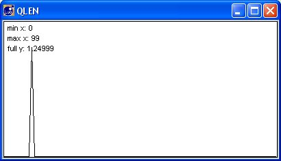
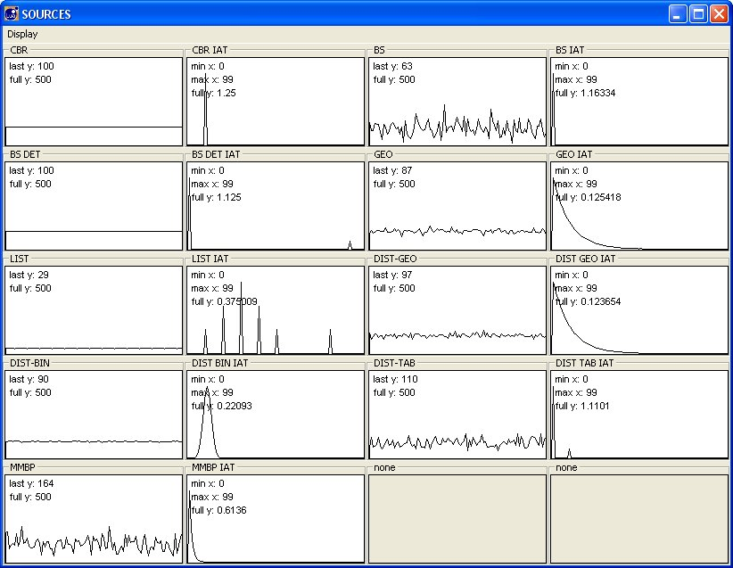
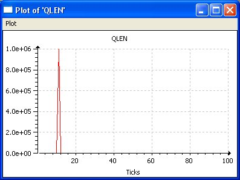

Instruments and Displays
Instruments
Luayats provides 2 basic instruments:
- Histograms are used to show statistical distributions: value = f(frequency)
- Meters are used to show a sliding time history of a value: value = f(time)
Instruments display data very fast and provide a mechanism for direct private data access based on memory references that is runtime controlled. This is called the Luayats EXPORT mechanism. Hence, only values actively exported by net object can be visualized in instruments.
An instrument can be associated to a display dialog during it's instantiation or it can be attached to the dialog later on.
A left click on an instruments opens a popup menu which allows the user to
- Print the graphics contents of the instrument
- Store the instrument data into a file (snapshot)
- Plot a more detailed view of the visible contents in a new dialog
Luayats file: graphics.lua
| Network Object | Class | Notes |
| Histogram | yats.histo | Displays the histogram of a distribution. The distribution is sampled at specified display intervals. |
| Histogram with Distribution construction | yats.histo2 | Produces a distribution at specified update intervals and samples this distribution at specified display intervals. |
| Meter | yats.meter | Shows a sliding time history of a value |
Display Dialogs
Display dialogs are the frame work for using instruments. An instrument always appears in a new dialog, not in the Luayats main GUI. This allows to use instruments independently from the GUI.
There is a simple display for one single instrument and a big display for an array of instruments avoiding the frame overhead of a dialog for each instrument.
Luayats file: graphics.lua
| Network Object | Class | Notes |
| display | yats.display | Simple display for one single instrument. |
| bigdisplay | yats.bigdisplay | Dialog
with an array of instruments organized in rows and columns. Instruments
can be detached or attached to the dialog during runtime. The bigdisplay has a menu for printing the instruments within the dialog and to exit the application. |
Examples:
Simple Display

Big Display

Plot of Details::
